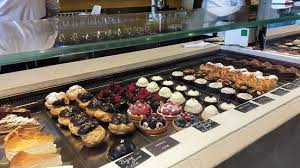

Dagprogramma's
Je kan natuurlijk zelf in Venetië gaan rondlopen en alles bedenken wat je gaat doen, maar je kan ook het ook voor je laten doen. Wij hebben dat voor jou al gedaan, je kan in totaal 4 dagen met ons meelopen. Je kan na de dagprogramma's ook nog gewoon in Venetië blijven.
Dit zijn alle 4 de dagen.
Dag 1
Majer ontbijt restaurant
De kosten hangt af van wat je bestelt.
Dit ontbijt duurt van 10:00 tot 12:00.
Rencensie
De rencensie kun je op deze link zien.Torcello

De prijs van deze tocht is €20.
De tocht is 4 uur van 12:30 - 16:30.
Over torcello
Torcello maakt deel uit van de venetiaanse eilanden. De andere eilanden zijn Burano en Murano.Torcello is een rustig eiland in het noordelijke deel van Laguna Veneta. De naam komt waarschijnlijk van de stadspoort of toren van Altino. Het eiland staat bekend als de voorloper van Venetië. In de 7e eeuw vluchtten de bisschop en inwoners van Altino naar dit eiland, opgejaagd door de Longobarden. U moet zelf een lunch meenemen.
Centrum

Je kan in het centum blijven van 17:00 - 18:30.
Ristorante Cinese Al Leon D'Oro

Rencensie
Je kan van 19:00 - 21:00 eten in het restaurant.De rencensie kun je op deze link zien.
Samenvatting
| Ochtend | Middag | Avond | Tijd |
| Majer | 10:00 - 12:00 | ||
| Met de boot naar Burano | 12:30 - 16:30 | ||
| Centrum | Centrum | 17:00 - 18:30 | |
| Ristorante Cinese Al Leon D'Oro | 19:00 - 21:00 |
Dag 2
In het hotel heb je tijd om uit te slapen en rustig te ontbijten. Om 12 uur halen wij je op vanaf de verzamelplek van gisteren. Wij gaan dan eerst naar Scala Contarini del Bovolo. Daar blijf je tot 13:30. Hierna gaan we gondelen op de rivier: Brenta. Hierna kunt u ergens in het centrum gaan lunchen, (wij brengen u daar naartoe). Om 15:00gaan we naar het Leonardo Da Vinci Museum. Dan brengen wij u terug naar het verblijf en kunt u verder zelf van de stad genieten.
Dit is Scala Contarini del Bovolo. Hier ga je als eerst naar toe. Dit is een mooi gebouw vol architectuur. Je hebt hier een fantastisch uitzicht over de stad.

Je gaat lekker varen over de Brenta op een gondel, je komt langs mooie plekken in de stad. Neem vooral je camera mee om mooie foto's te maken!

Het Leonardo Da Vinci Museum is heel leerzaam, je leert wat hij heeft gedaan waardoor wij ons leven makkelijker kunnen laten verlopen.
Dag 3
11:00
Semi-onafhankelijke tour door Murano en Burano-eilanden

€20,-
Deze activiteit duurt 4 uur.
Dit is de leukst activiteit die we vandaag gaan doen.
Wat houdt de tour in?
4 uur lang naar verschillende eilanden van Venetië
Kom meer te weten over de rijke geschiedenis van Murano en het erfgoed van het maken van glas
Bewonder de felgekleurde huizen van het eiland Burano
Reis per motorboot en bekijk de bezienswaardigheden vanaf het water
Semi-onafhankelijke tour biedt meer flexibiliteit
Dit is het perfecte uitje voor als je de eilanden Murano en Burano wilt bezoeken
Soms word er uitleg gegeven de uitleg is in het Engels, Spaans, Frans, Duits en Italiaans.
tripadvisor
Dit is de plek waar het begint en eindigt
15:00
Je kunt op dit moment kiezen wat je gaat doen.
Als je meer van de natuur houdt dan zal ik hier
Giardini Pubblici

Het park is gratis.
Als je naar dit park gaat dan moet je wel met de boot anders dan mis je de volgende activiteit
--------------------------
Als je naar een winkelcentrum wilt dan zou ik hier
T Fondaco Dei Tedeschi
Je kunt lopend naar het winkelcentrum Dat is ongeveer 15min maar je kunt ook met de boot.
16:30
Klassieke gondelvaart
€31,-
Deze activiteit is iets wat je zoiezo een keer moet doen in Venetië. (Dat hoeft niet perse deze gondelvaart te zijn maar deze is wel mooi.)
Wat houdt deze Gondelvaart in?
Geniet van Venetië vanuit uw speciale plek aan boord van een gondel en volg zijn zachte beweging. Maak een tochtje langs het Canal Grande en de kleinere grachten rond Piazza San Marco en Rialto.
Deel een gondeltocht met maximaal 5 andere mensen en vaar door het water met een ervaren gondelier die u leidt door de prachtige mysterieuze grachten van Venetië tijdens een rustige 30 minuten durende tocht.
tripadvisor
17:00
Dogepaleis

Normaal
€20,-
tripadvisor
-------------------------
Geen wachtrij + Rondleiding
€36,-
tripadvisor
-------------------------
Deze activiteit hoeft niet het is alleen voor als je nog meer wilt zien van Venetië.
Het is een heel mooi paleis mensen die er zijn geweest raden je ook aan om in de wapenkamer en de oudegevangenis een kijkje te nemen.
Er zijn heel veel mooie schilderijen en alle kamers zijn ook mooi geschilderd
18:30
Ristorante Alle Corone

De prijzen kan ik niet vertelen want die verschillen wat je koopt.
In dit restaurant word echt italiaans gekookt
Je kunt dit ook om een andere tijd doen maar dit is maar een voorbeeld.
tripadvisor
Verblijf
Als je klaar bent met eten kun je nog even rond kijken of weer terug naar je verblijf plek gaan.
Dag 4
07:00
Sightseeing hop-on hop-off tour door Venetië

€18,-
Deze activiteit duurt hoelang je wil.
Wat houdt de tour in?
een tour waar je elk moment vanaf kan door Venetië
De tour is in het Engels.
De tour heeft ook gratis wifi.
tripadvisor
10:30
Venice Street Food Tour met lokale gids met lokaal voedselbezoek.

€39,-
Deze activiteit duurt 2uur en 30 min.
Wat houdt de tour in?
Je mag in de tour ook Eten proeven.
De tour is in het Engels.
Je moet redelijk fit zijn voor deze activitijd.
tripadvisor
14:30
Pizza Al Volo
Ook voor vegetariërs
Deze ativiteit is gewoon zodat je lekker kan eten
tripadvisor
16:30
Museo d’Arte Orientale

Deze activiteit duurt 1-2 uur.
tripadvisor
Dag 4
08:30
Sightseeing hop-on hop-off tour door Venetië
€18,-
Deze activiteit duurt hoelang je wil.
Wat houdt de tour in?
een tour waar je elk moment vanaf kan door Venetië
De tour is in het Engels.
De tour heeft ook gratis wifi.
tripadvisor
10:30
Venice Street Food Tour met lokale gids met lokaal voedselbezoek.
€39,-
Deze activiteit duurt 2uur en 30 min.
Wat houdt de tour in?
Je mag in de tour ook Eten proeven.
De tour is in het Engels.
Je moet redelijk fit zijn voor deze activitijd.
tripadvisor
14:30
Pizza Al Volo
Ook voor vegetariërs
Deze ativiteit is gewoon zodat je lekker kan eten
tripadvisor
16:30
Museo d’Arte Orientale
Deze activiteit duurt 1-2 uur.
tripadvisor